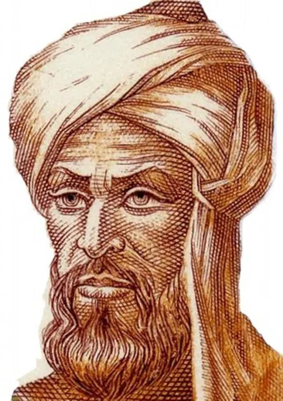
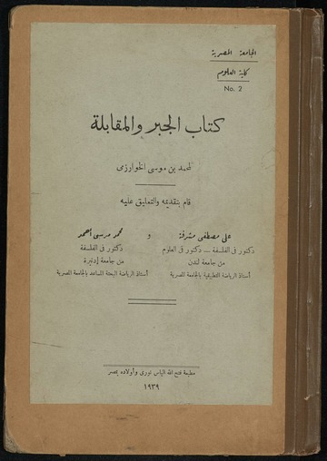
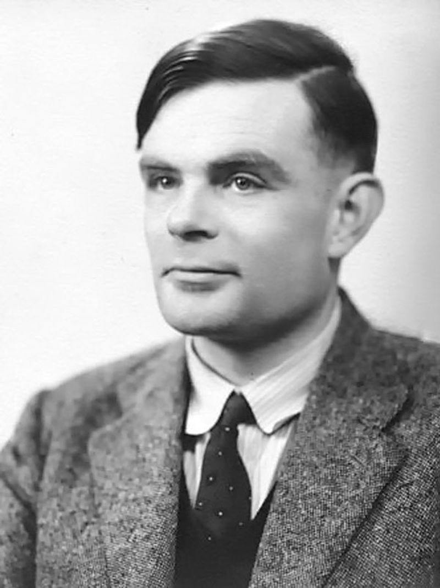
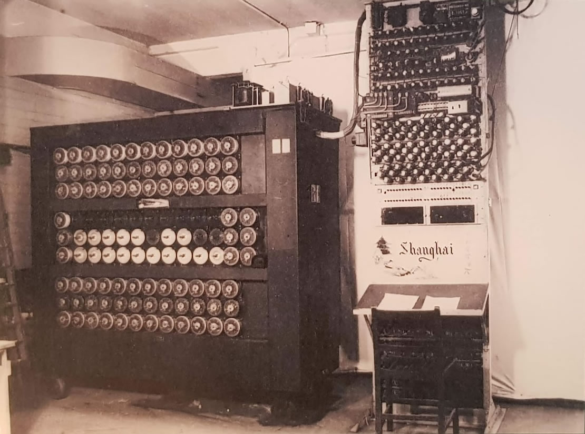
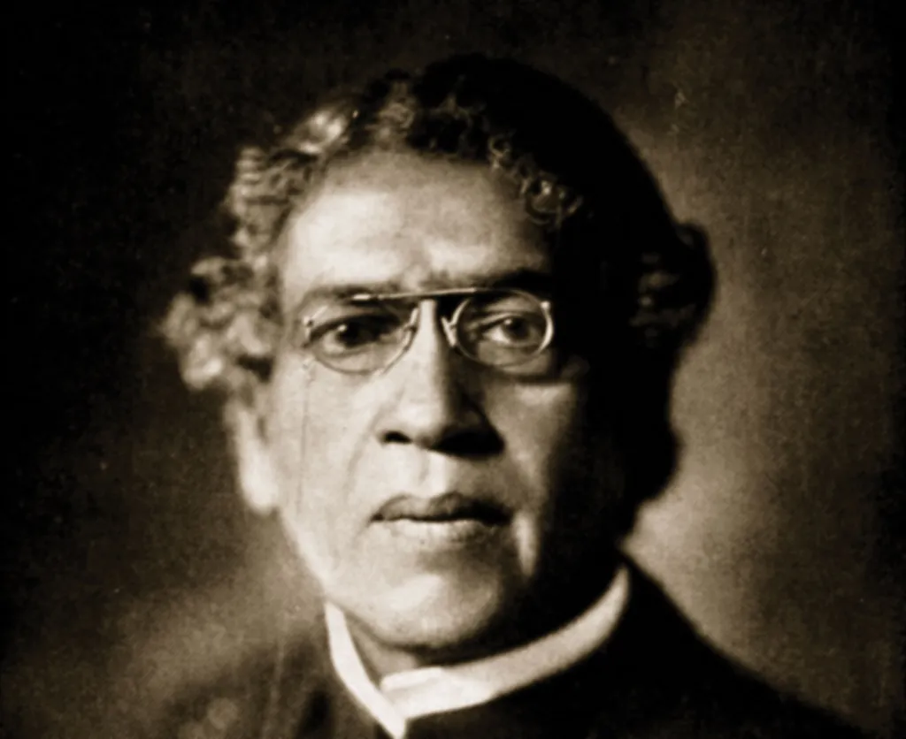
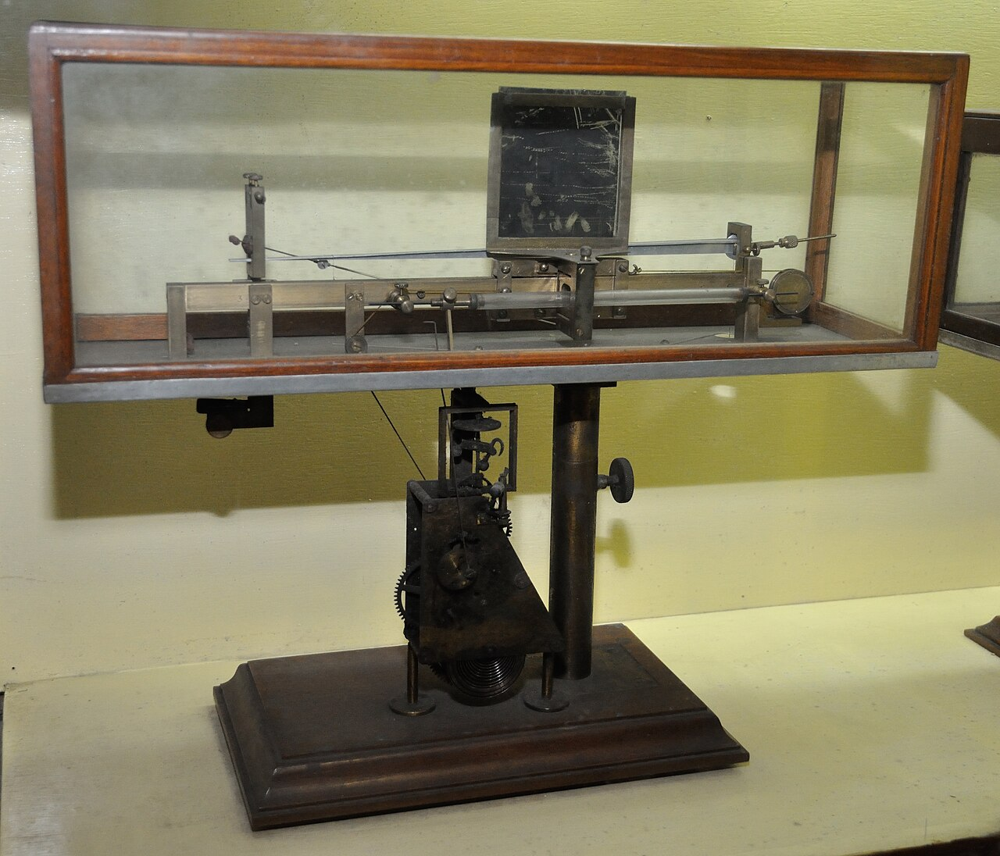

বিষয়বস্তু
বিশ্ব স্টোক এক্সচেঞ্জে আইসিটি ব্যবহার করা হয় ব্যবসা করার জন্য
আইসিটি (তথ্য ও যোগাযোগ প্রযুক্তি) একটি ব্যাপক পরিভাষা যা অনেক কিছুকে অন্তর্ভুক্ত করে।
যেমন: ইলেকট্রনিক যোগাযোগ, টেলিভিশন, কম্পিউটার নেটওয়ার্ক, স্যাটেলাইট সিস্টেম এবং আরও।
আইসিটি বর্তমান বিশ্বের একটি অত্যন্ত গুরুত্বপূর্ণ অংশ।
চিকিৎসা, বিনোদন, যোগাযোগ এবং দৈনন্দিন জীবনের নানা ক্ষেত্রে এর ব্যবহার রয়েছে।
এমনকি বিশ্বের বিভিন্ন দেশের সরকারও প্রতিরক্ষা ব্যবস্থা পরিচালনা, আর্থিক ব্যবস্থাপনা এবং বিভিন্ন সংস্থা পরিচালনার মতো নানা প্রয়োজনে আইসিটি ব্যবহার করে থাকে।
আইসিটির পরিধি অত্যন্ত ব্যাপক হওয়ায়, এমন অনেক ব্যক্তিকেই এর পথিকৃৎ হিসেবে গণ্য করা যায়, যাঁরা আইসিটি শব্দটি উদ্ভাবিত হওয়ার বহু শতাব্দী আগেই জন্মগ্রহণ করেছিলেন।
উদাহরণস্বরূপ বলা যায় আল-খোয়ারিজমির কথা, যাঁকে ইউরোপীয়রা অ্যালগরিজমুস নামে অভিহিত করত।

মোহাম্মদ ইবনে মুসা আল-খোয়ারিজমি
محمد بن موسى الخوارزميّ

কিতাব আল-জাবর
আল-খোয়ারিজমি বিভিন্ন বিষয়ে গুরুত্বপূর্ণ অবদান রেখেছেন।
তবে তাঁর সবচেয়ে উল্লেখযোগ্য কাজগুলোর মধ্যে অন্যতম হলো বীজগণিতের বিভিন্ন সমীকরণ উদ্ভাবন।
উদাহরণস্বরূপ, নবম শতাব্দীতে রচিত তাঁর গ্রন্থ ‘আল-কিতাব আল-মুখতাসার ফি হিসাব আল-জাবর ওয়াল-মুকাবালা’-এর কথা বলা যায়।
সংক্ষেপে এটি ‘আল-জাবর’ নামে পরিচিত, যা থেকেই বীজগণিত শব্দটির উৎপত্তি।
পাশাপাশি, তথ্য ও যোগাযোগ প্রযুক্তির ক্ষেত্রেও তিনি পরোক্ষভাবে বিশাল অবদান রেখেছেন।
তিনি পাটিগণিত ও অ্যালগরিদম, বিশেষ করে ভারতীয় পাটিগণিত—নিয়ে অনেক গ্রন্থ রচনা করেছেন।
তাঁর অন্যতম একটি কাজ হলো ‘কিতাব আল-হিসাব আল-হিন্দি’, যেখানে দশমিক পদ্ধতির ওপর ভিত্তি করে অ্যালগরিদম নিয়ে গভীর আলোচনা করা হয়েছে।
পরবর্তীতে তাঁর কাজগুলো ইউরোপে পৌঁছায় এবং সেখানে ব্যাপক সমাদৃত ও বিখ্যাত হয়ে ওঠে।
অ্যালগরিদম সম্পর্কে ইউরোপীয়দের ধারণার এতটাই উন্নতি ঘটেছিল যে, শতাব্দীর পর শতাব্দী ধরে তাঁর রচিত গ্রন্থগুলো ব্যবহৃত হতে থাকে।
কম্পিউটার আবিষ্কারের ক্ষেত্রে অ্যালগরিদম একটি অত্যন্ত গুরুত্বপূর্ণ উপাদান হিসেবে কাজ করেছে।
আল-খোয়ারিজমির কাজগুলো না থাকলে হয়তো আজ আমরা কম্পিউটার পেতাম না, আর পেলেও সেগুলো বর্তমানের মতো প্রযুক্তিগতভাবে এতটা উন্নত হতো না।
আগেই উল্লেখ করা হয়েছে যে, ইউরোপীয়রা তাঁকে ‘অ্যালগরিজমুস’ নামে অভিহিত করত, যা থেকেই ‘Algorithm’ (অ্যালগরিদম) শব্দটির উদ্ভব হয়েছে।
এমন একজন ব্যক্তির কথা কল্পনা করা কঠিন যিনি তাঁর সময়ের চেয়ে এতটাই এগিয়ে ছিলেন যে, হাজার বছর পরেও তাঁর কাজগুলো অত্যন্ত গুরুত্বপূর্ণ।
তিনি কতটা মেধাবী ছিলেন, তা ভাষায় প্রকাশ করা অসম্ভব।
তিনি নিঃসন্দেহে তাঁর যুগের অন্যতম শ্রেষ্ঠ গণিতবিদ ছিলেন।

অ্যালান ম্যাথিসন টুরিং
Alan Mathison Turing

বমবের একটি ছবি
অ্যালান টিউরিং ছিলেন একজন ব্রিটিশ ক্রিপ্টোগ্রাফার (ক্রিপ্টোগ্রাফার হলেন তিনি; যিনি সাইফার বা গোপন সংকেত ও কোড নিয়ে গবেষণা করেন)।
আল-খোয়ারিজমির মতোই তিনিও কম্পিউটার আবিষ্কারে গুরুত্বপূর্ণ অবদান রেখেছিলেন।
তিনি মূলত 'এনিগমা' যা 'ভেঙা অসম্ভব এমন একটি সাইফার' হিসেবে পরিচিত ছিল; তার গোপন সংকেত বা কোড উদ্ধার করার জন্য সর্বাধিক পরিচিত।
এনিগমা ছিল দ্বিতীয় বিশ্বযুদ্ধের সময় জার্মানদের ব্যবহৃত একটি সাইফার বা গোপন সংকেত ব্যবস্থা।
এটি এমন একটি কোড ছিল যা বর্ণমালার প্রতিটি অক্ষরকে অন্য একটি অক্ষরে এলোমেলোভাবে পরিবর্তন করত এবং এই পরিবর্তনের নিয়মটি প্রতিদিন বদলে ফেলা হতো।
এ কারণেই গোপন বার্তা আদান-প্রদানের জন্য এনিগমা ব্যবহার করা হতো।
এতে ১৫৯ কুইন্টিলিয়ন (১৫৮,৯৬২,৫৫৫,২১৭,৮২৬,৩৬০,০০০)-এরও বেশি সম্ভাব্য বিন্যাস বা কম্বিনেশন ছিল।
আর ঠিক এই কারণেই এই কোডটি ভাঙা অসম্ভব বলে মনে করা হতো।
কিন্তু ১৯৩৯ ও ১৯৪০ সালে, পোলিশ ক্রিপ্টোগ্রাফারদের সহায়তায় অ্যালান টিউরিং “বোমব” (Bombe) নামে একটি যন্ত্র তৈরি করেন।
যন্ত্রটি একের পর এক সম্ভাব্য বিন্যাস বা কম্বিনেশন হিসাব করত এবং অসঙ্গতির ভিত্তিতে প্রতিটি বিন্যাসকে বাতিল করে দিত, যতক্ষণ না মাত্র কয়েকটি বিন্যাস অবশিষ্ট থাকত।
এরপর সেই অবশিষ্ট বিন্যাসগুলো হাতে-কলমে যাচাই করা হতো, যতক্ষণ না আসল বার্তাটি বেরিয়ে আসত।
আজ তাঁকে দ্বিতীয় বিশ্বযুদ্ধ দ্রুত শেষ করা এবং লক্ষ লক্ষ মানুষের জীবন বাঁচানোর কৃতিত্ব দেওয়া হয়।
এত কিছুর পরেও, আইসিটির ক্ষেত্রে তাঁর সবচেয়ে বড় অবদান সম্ভবত 'টিউরিং মেশিন'।
এটি ছিল একটি তাত্ত্বিক মডেল যা ব্যাখ্যা করত কীভাবে একটি যন্ত্র ধাপে ধাপে তথ্য প্রক্রিয়াজাত করতে পারে।
আইসিটিতে অ্যালগরিদম, প্রোগ্রামিং এবং সমস্যা সমাধানের প্রক্রিয়া বোঝার জন্য আজও এই ধারণাটি ব্যবহৃত হয়।
যদিও কম্পিউটার আবিষ্কারের কৃতিত্ব চার্লস ব্যাবেজকে দেওয়া হয়,
তবুও এই ধারণাটি ছাড়া আধুনিক কম্পিউটার—এমনকি সফটওয়্যার বা স্মার্টফোন—আজ আমরা যেভাবে চিনি, সেভাবে হয়তো কখনোই অস্তিত্ব লাভ করত না।
অ্যালান টিউরিং কৃত্রিম বুদ্ধিমত্তা বা আর্টিফিশিয়াল ইন্টেলিজেন্সের ক্ষেত্রেও ব্যাপক অগ্রগতি সাধন করেছিলেন।
তিনি বিখ্যাত 'টিউরিং টেস্ট'-এর প্রবর্তন করেন, যা দিয়ে যাচাই করা হয় যে কোনো যন্ত্র মানুষের মতো চিন্তা করতে পারে কি না।
কৃত্রিম বুদ্ধিমত্তা গবেষণা, রোবোটিক্স এবং মেশিন লার্নিংয়ের ক্ষেত্রে আজও এই পরীক্ষাটি নিয়ে আলোচনা করা হয়।
তাঁর ধারণার কারণেই আজ আমরা ভার্চুয়াল অ্যাসিস্ট্যান্ট, স্মার্ট অ্যালগরিদম এবং এমন সব এআই সিস্টেম পেয়েছি যা শিখতে ও সিদ্ধান্ত নিতে সক্ষম।
তাঁর চিন্তাধারা ছিল তাঁর সময়ের চেয়ে অনেক অগ্রগামী; তাই তিনি যখন জীবিত ছিলেন, তখন অনেকেই তাঁকে ঠিকমতো বুঝতে পারেননি।
অ্যালান টিউরিং ছিলেন একজন অগ্রদূত, যুদ্ধ-বীর, কম্পিউটার তত্ত্বের জনক এবং আধুনিক প্রযুক্তির এক অনুপ্রেরণা।

জগদীশ চন্দ্র বসু

A picture of the Crescograph